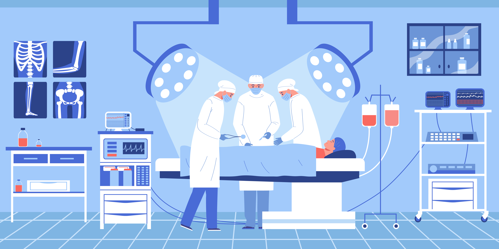

Definitions you should know...

Click each term / question below for a short explanation
What is a "Turn Over"?
What does it mean when you 'clean'?
Disinfecting
What is the "wet time" for a cleaning product?
Sterilization
*Photos from local operating room